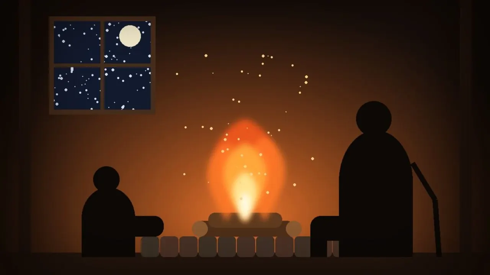

작가 집필 + AI 분기65~130분
GLITCH
심리 SF · 미스터리
다른 팀의 서연을 좋아하던 평범한 회사원이 그녀의 실종을 겪는다. 지워진 기억과 서로 다른 다섯 일상을 지나, 선택한 삶을 실제 행동으로 만들어 가는 이야기.
선택이 이야기를 바꾸는 한국어 인터랙티브 스토리 게임. 작가가 직접 쓴 장편 스토리와, 매 장면을 AI가 그 자리에서 쓰는 이야기를 함께 즐길 수 있어요.
AI가 생산과 운송, 식량과 의료를 해결했다. 일은 더 이상 생존의 조건이 아니다.
풍요는 넘치지만 설렘이 사라졌다. 무엇이든 할 수 있는 내일에 무엇을 적어야 할지 몰랐다.
사람에게 필요한 건 또 하나의 편의가 아니라, 자신의 선택으로 달라지는 시간이었다.
첫 경험은 무료. 접속하는 동안 이곳의 기억은 접어 두고, 돌아오면 그 안에서 살았던 시간을 기억한다.
다음에 무슨 일이 일어날지 알고 싶어지는 곳.
작가가 쓴 분기형 장편부터, 매번 다른 이야기를 쓰는 AI 스토리까지.
심리 SF · 미스터리
다른 팀의 서연을 좋아하던 평범한 회사원이 그녀의 실종을 겪는다. 지워진 기억과 서로 다른 다섯 일상을 지나, 선택한 삶을 실제 행동으로 만들어 가는 이야기.
다크 판타지 · 모험 · 정치 미스터리
기억을 잃은 사형수로 깨어나 탈옥하고, 죽은 왕과 잠든 별철 왕관, 지워진 자신의 진명을 추적하는 분기형 모험.
역사 · 전략 · 대체역사
원작의 큰 사건 속으로 들어가는 여덟 편. 새로운 경로에서 사람과 길을 준비하고, 원작과 다른 생사와 결말을 만든다.
지정학 스릴러
대통령 특사의 4년 반. 역사가 고른 카드만 쥐면 오늘의 현실에 닿고, 다른 카드를 쥐면 세계가 핵의 문턱에 선다. 2부는 핵전쟁까지 24일·24시간·24분.
실화 기반 · 인물은 모두 가상
고딕 미스터리
왓슨이 되어 다트무어의 지옥 사냥개 뒤에 숨은 음모를 추적한다. 2부는 AI가 매 장면을 새로 써서, 같은 선택을 해도 매번 다른 이야기.

옛이야기 · 모험 · 괴담 · 로맨스
오늘의 기분과 듣는 사람, 장소와 시간을 물은 뒤 300여 편 가운데 딱 맞는 이야기를 골라 소리 내어 들려준다.
장면마다 3~5개의 선택지. 고른 길에 따라 엔딩이 달라져요.
하고 싶은 행동을 직접 입력하면 AI가 그 결과로 새 장면을 써요.
신체능력·관찰력·정신력·설득력·창의력. 성공할수록 능력치가 자라요.
정해진 시나리오 없이, 글이 써지는 대로 화면에 흘러나와요.
아이와 함께면 순하게, 혼자라면 진짜 무서운 이야기까지. 13가지 목소리로 읽어줘요.
휴대폰과 PC 브라우저에서 바로 실행. 자동 저장과 이어하기를 지원해요.
AI가 쓰는 장면만 장면 단위로 충전해서 써요.
로그인 없이 바로 플레이. 모든 작가 집필 스토리를 즐길 수 있어요.
AI 스토리와 직접 쓰는 행동을 쓸 수 있고, 가입하면 AI 장면 20개를 드려요.
500장면은 약 $15. 결제는 곧 열릴 예정이에요.
화롯가 이야기는 대목 1개와 그 대목의 목소리가 각각 1장면이에요. 같은 대목을 다시 듣는 건 무료예요.